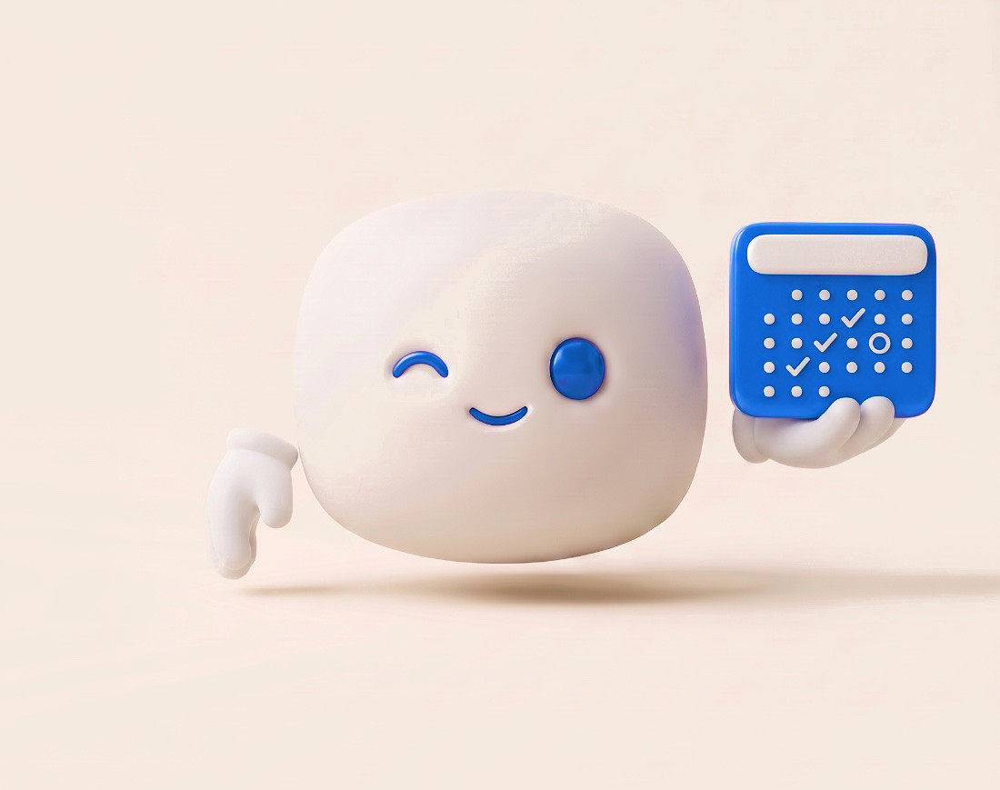
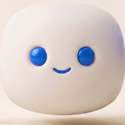

i know your week
calendar, canvas, class times, the gym line. i plan around all of it.

cued
reading your calendar…
this week
mon
cs 61cdata 104push
tue
chem 1alab
wed
cs 61cchem hwdiscussion
thu
chem 1aclublegs
fri
cs 61cchem quiz
chem hw's due wed 4pm, so legs moves to thu. gym closes at 6 today if u want in.
gym time tomorrow?
add choice
alr, evening it is. i'll ping u when the line's short.